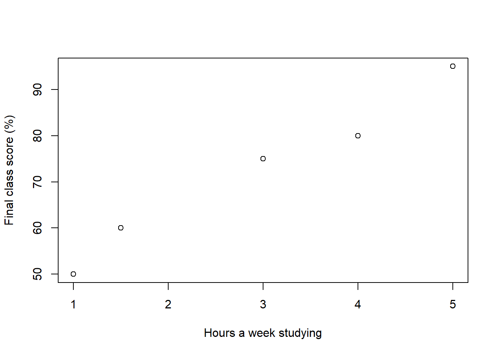
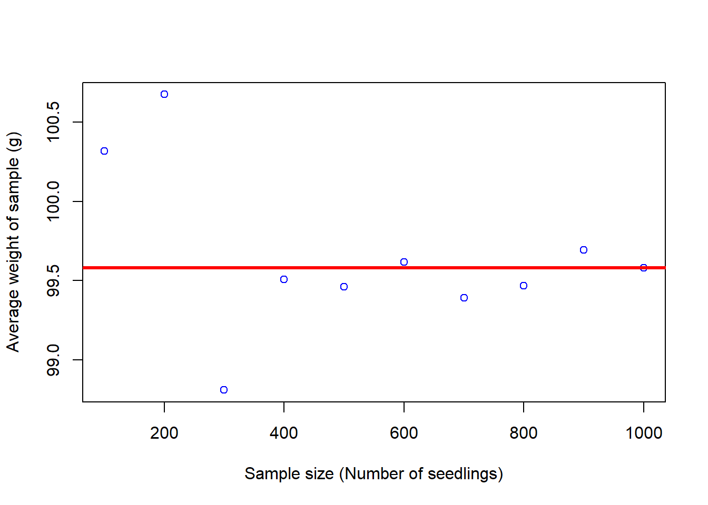
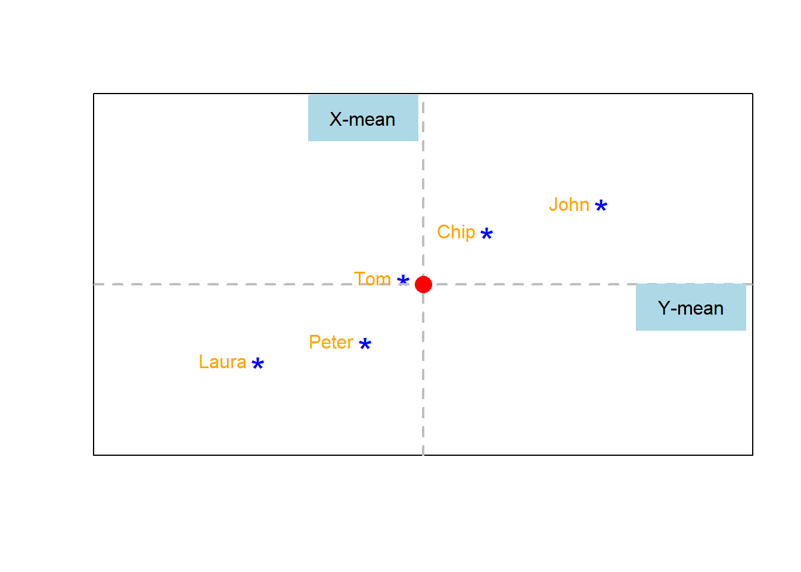
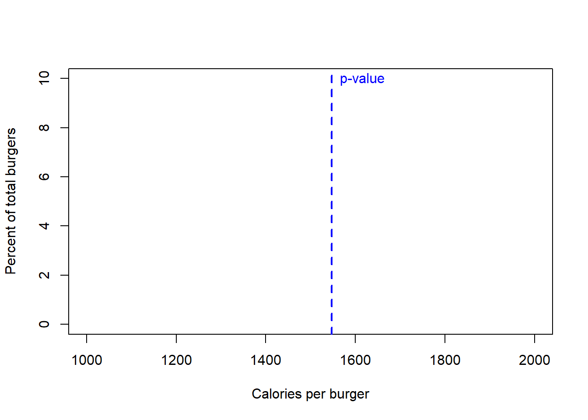
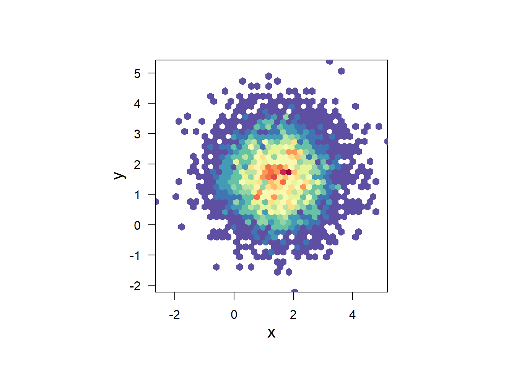
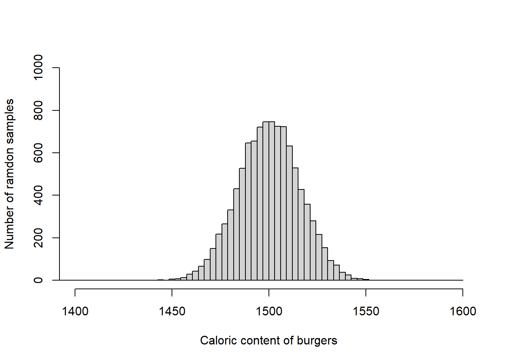

The least-squares line
By now, you know the formulation (i.e., \(Y= mX + b\)) and the general purpose (i.e., to predict Y, given values of X) of a linear regression model. The next task in this chapter is to figure out how to get the best line that can be drawn through two variables that we want to relate.
Obviously, you can draw an infinite number of straight lines trhough a set of datapoints; then a key question is which line best describe the data?. That is the goal of the linear regression model: to draw a best-fit line through the datapoints.
The best fitting line will be a line that minimizes the distance from each point to that line. In mathematical terms, that line is called the least-squares regression line. In a moment, you will see how that name (least-squares regression line) speaks by itself; I hope in a moment you will see how the term is self-explanatory.
Understanding the least-squares line
Let’s use an analogy, and imagine the best fitting line as a knife that cut a cake.
Take the figure below as an example. That blue line would be the knife and the red dotted lines the pieces of cake for each person. Will this be a good cut? Will that be the best-fitting line?

Not quite s. I can imagine Laura not being happy about getting a smaller piece of cake. She may complain but there are four guys that will not support her, as they are likely very happy getting bigger shares of that cake. So in this case, this line is not the best describing the data.
What about the line below?. Will that be a good-fitting line to the data?

Well, may be…you may think the complains by Laura and Peter getting smaller pieces could be balanced out by the extra happiness of Chip and John getting larger shares of the cake.
However, there are some justified complains that can be avoided if we better cut that cake; a cut in which we can reduce the complains by every body. That can only be done drawing a line that minimizes the distance from each point to the line, and that is the so-called “least-square regression line”.
Like in the image below: 
Deciphering the least-squares line
But of all lines that we can draw through a set of data points, how can we know what is the best-fit line?, the one in which everybody is happy using the cake analogy?. There are actually different ways to get to that line…let’s start by using brutal force, which may actually help us understand the idea behind the “least-squares”.
We know for a fact that the ‘best-fitting line’ has to pass by the XY coordinates defined by the mean of all values in X and the mean value of all values in Y. At that inflection point, all data in X and all data in Y are evenly separated, so the best fitting-line has to pass by that given point.
Let’s plot the mean value of X and the mean value of Y (Dashed grey-lines in the image below) and at the interception of those lines let’s we plot the mean of X and the mean of Y (red dot in image below).

Next, we draw a very inclined line passing trough that inflection point defined by the coordinates Mean-X and Mean-Y. Like in the image below.
Next, we measure the distance from each point to that line (red-dashed lines), which I indicate with the red numbers in the image below.
(Remember, the best line will be one with the smallest distance between each point and the given line)

That difference between each point and the best-fitting line (red-dashed lines and red-numbers) are called residuals. It may also be named residual errors.
Why call the residual also an error?. well, in the case of the linear regression, we want a model that best describes the data. Unfortunately, the best-line does not pass by every single one of the points, so that difference between the each point and the line is the error in the model.
Next, we add up all residual errors. Remember, the best fitting line will be that one with the least residual error:
\((2.124)\) + \((-0.036)\) + \((0.614)\) + \((-0.276)\) + \((-2.426)\) = \(0\)
Hmm, that does no make sense, the sum is 0; yet we know that for Laura alone, the residual error is \((2.124)\).
So how can you add up positive and negative errors, so they do not cancel each other out?. You should know….
I hope you say by “squaring” pr elevating the given number to the power of 2. If you recall from the last chapter, the approach of squaring any value allows to convert all values positive or negative to non-negative values…lets try.
\((2.124)^2\) + \((-0.036)^2\) + \((0.614)^2\) + \((-0.276)^2\) + \((-2.426)^2\) =\(10.8513\)
Ok, that is more like it. That value that we just calculated is call the Sum of Square Errors or SSE. The best fitting line, will be that one in which SSE is the smallest. There why the approach to finding out the best finding line is called the “least squares”.
Lets finish the exercise by brutal force, drawing lines with different inclinations and estimating their SSE. Like the figure below.
Figure 7.2: Finiding the line with the least-squares error
We can compare the sum of squares errors, SSE, of each line to find out the one with the least, like this:

And it seems we have a winner, our line number 30 was the one with the lowest sum of squares, which I separate below:

Ok, I hope is clear then what is it the least squares approach to find the best fitting line. Next, we will learn how to estimate the parameters for the intercept, \(b\), and the slope, \(m\), that define the line in the linear regression model, the smart and easy way.